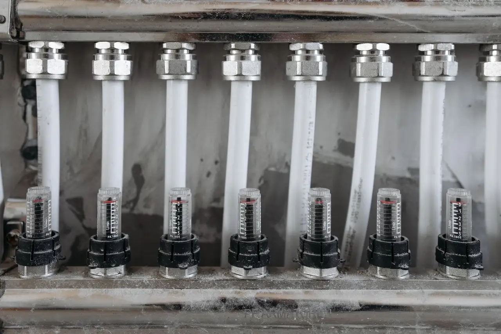

Commercial Plumbing Services in Arlington Heights that keep your business running
Commercial Plumbing Services in Arlington Heights means keeping your restrooms, kitchen, and water supply working through every shift. We handle restaurants on Dunton Avenue, offices near the Metra station, and retail along Rand Road. When a grease line backs up or a water heater quits, you get a commercial plumber in Arlington Heights who arrives with the right parts and clears the problem the same day.
Check supply pressureCamera the drainTest before leaving
We walk the systemSupply, drains, heater, backflow
We quote firstPrice before any work starts
We protect the spaceFloors and counters covered
We test the repairPressure and flow confirmed
What Commercial Plumbing Services includes
Every commercial call includes a full inspection of the affected system, a written quote before work starts, the repair itself, and a test to confirm it holds. We also document what we found and what we replaced. Add-ons like hydro jetting or camera inspection are quoted separately when the line calls for them.
Full system inspection
We check supply lines, shut-off valves, drains, water heater, and backflow assembly before quoting. A pressure gauge and leak detection equipment confirm what is actually failing, so you are not paying to replace a part that is still good.
Written repair quote
You see the price before we start. If the job changes once we open a wall or pull a fixture, we stop and explain why before adding anything. That keeps the invoice predictable for your maintenance budget.
Code-correct repair
Permits are pulled when the job requires them, and backflow work is tested with calibrated equipment.
Pressure and flow testing
After the repair we pressure-test the line and run the fixture to confirm it holds. For drain work, we flow-test the line and, when needed, run a sewer camera to show the pipe is clear before we pack up.
Cleanup and job report
We protect floors and counters, haul away old parts, and leave the area dry. You get a short report of what failed, what we replaced, and anything to watch, so your next maintenance decision is easier.
Homes and businesses.
The approach is the same for a home and a business. What changes is the access, the schedule and who needs the paperwork.

For homes
Homeowners and tenants call us for leaking water heaters, clogged drains, and running toilets. We repair the problem and check the rest of the system while we are there.
Leaking water heater
Clogged kitchen drain
Running toilet
For businesses
Owners and property managers call us for grease line backups, failed backflow tests, and commercial water heater problems. We schedule around your open hours when we can.
Grease line backup
Failed backflow test
No hot water
Commercial Plumbing Services in Arlington Heights
A plain-language look at what Commercial Plumbing Services involves and when it is needed.
Commercial Plumbing Services in Arlington Heights covers the pipes, fixtures, and water systems that keep a business open. That means commercial-grade water heaters, grease and sewer lines, backflow assemblies, restroom fixtures, and the supply lines feeding every sink and dishwasher. We work on copper pipe, PEX tubing, and PVC pipe daily, and we size repairs for the traffic your building actually sees, not a house down the street.
Arlington Heights businesses run into the same handful of problems: a clogged drain during the lunch rush, a leaking water heater before a holiday weekend, or a backflow failure that threatens your health inspection. Our commercial plumbing Arlington Heights, Illinois crews handle all three. If you need a commercial plumber near me Arlington Heights IL, call (224) 643-9856 and we will get a technician moving your way.
Commercial plumbing keeps your business open, so the repair has to hold the first time.
What it is
Repair and maintenance of the pipes, fixtures, and water systems in a commercial building.
When you need it
When a drain backs up, a water heater fails, or a backflow test does not pass.
What to expect
An inspection, a written quote, the repair, and a test before we leave.
How a commercial service call works
You call, we ask a few questions, and a technician arrives with a stocked truck. From there the job follows five steps, whether it is a single fixture or a full sewer line problem.
Call and triage
You describe the problem, we ask what is backing up, leaking, or not heating. We book a window that fits your business hours and tell you what to shut off in the meantime. Most calls get a same-day slot.
Call
Triage
Book
On-site inspection
The technician walks the system: supply lines, shut-off valves, water heater, drains, and backflow assembly. We use a pressure gauge, leak detection equipment, and a sewer camera when the line is the suspect. You get a plain explanation of what we found.
Inspect
Camera
Gauge
Written quote
We price the repair before any work starts. If the fix is a rebuild versus a replacement, you see both numbers and the trade-offs. No surprise line items when the invoice arrives.
Quote
Explain
Approve
Repair and test
We complete the work with the right tools, whether that is a pipe wrench and soldering torch on copper or a PEX crimping tool on new tubing. After the repair we pressure-test the line and run the fixture to confirm it holds.
Repair
Test
Confirm
Cleanup and report
We protect floors and counters, haul away old parts, and leave the area dry. You get a short report of what failed, what we replaced, and anything to watch. If a follow-up visit is needed, we schedule it before we leave.
Clean
Report
Schedule
Tools and methods we use
Move across a circle, or focus it and press Enter, for an illustrative thermal view of the photograph.
Sewer camera
Shows exactly what is inside a commercial line, including root intrusion, cracks, and grease buildup, so we repair the right section instead of guessing.
Hydro jetter
Scours grease, scale, and roots from kitchen and sewer lines better than a cable alone, restoring full flow in commercial pipe sizes.
Leak detection equipment
Finds hidden slab and wall leaks without tearing up the whole floor, saving time and repair cost for Arlington Heights businesses.
Pressure gauge
Confirms supply pressure before and after repairs, so we know the fix holds and the system is not stressing fixtures or equipment.
PEX crimping tool
Makes code-correct connections on PEX tubing during repipes and repairs, giving a fast, reliable joint that holds under pressure.
Thermal views are illustrative, generated from the photographs.
Methods
Pipe wrench and soldering torch
Standard tools for copper pipe repair and replacement, used on supply lines, shut-off valves, and fixture connections throughout the building.
Video camera inspection
We run a sewer camera through commercial lines to see root intrusion, cracks, and bellies. The footage guides the repair plan and gives you a record of the pipe condition before and after work.
Hydro jetting
High-pressure water scours grease and scale from kitchen and sewer lines. We jet the line, then camera it to confirm the pipe is clean and intact before we finish the call.
Backflow testing
We test backflow assemblies with calibrated equipment and file the required paperwork.
Pressure testing
After supply repairs we pressure-test the line and watch the gauge for drops. That confirms the joint holds before we close a wall or leave the property.
When Arlington Heights businesses call us
Restaurant drain
A restaurant on Dunton Avenue has a floor drain backing up during the lunch rush.
We dispatch a technician with a drain snake and hydro jetter, clear the line, and run a camera to check for grease or root intrusion. The kitchen is back in service the same visit.
Outcome: The drain flows, the health inspection passes, and the restaurant finishes its lunch service without closing.
Office hot water
An office building near the Metra station loses hot water on a Monday morning.
We diagnose the commercial water heater, replace the failed element or thermostat, and test the unit under load. If the tank is beyond repair, we quote a replacement sized for the building.
Outcome: Restrooms and break rooms have hot water again, and tenants stop calling the property manager.
Backflow test
A retail strip on Rand Road fails its annual backflow test.
We test the assembly with calibrated equipment, repair or replace the failed components, retest, and file the required paperwork with the municipality.
Outcome: The property passes inspection, avoids fines, and keeps water service on without interruption.
Slab leak
A multi-tenant building in the Business District has a slab leak under the lobby floor.
We locate the leak with detection equipment, isolate the line, and repair or reroute it with minimal floor removal. A pressure test confirms the fix before we backfill.
Outcome: The water bill drops, the floor is restored, and tenants keep using the lobby without a long closure.
Downtown Arlington HeightsArlington Heights Business DistrictMiner Street Corridor
How Commercial Plumbing Services runs in Arlington Heights
Arlington Heights commercial buildings range from older Downtown structures with copper and galvanized lines to newer Business District offices plumbed in PEX. Winter here drives frozen pipes and burst supply lines, especially in unheated mechanical rooms and along exterior walls. Summer brings grease and root problems in restaurant and sewer lines. For business plumbing Arlington Heights IL customers, that means repairs that pass inspection and hold through the season. If you need same-day commercial plumbing repair Arlington Heights IL, call (224) 643-9856 and we will get a technician moving.
Downtown Arlington Heights: Older buildings with copper and galvanized supply lines, plus restaurants with heavy grease loads. We see more drain and repipe work here than anywhere else.
Arlington Heights Business District: Office and mixed-use buildings with newer PEX systems. Backflow testing and water heater service are the most common calls in this area.
Miner Street Corridor: Retail and food service properties with high-traffic restrooms. Running toilets and failed flush valves show up often, along with kitchen drain clogs.
Scarsdale: A mix of commercial and residential properties with mature trees. Root intrusion in sewer lines is a recurring problem we camera and repair.
Hard freezes in January and February: Frozen pipes and burst supply lines spike in unheated mechanical rooms. We isolate the line, thaw it safely, and repair or replace the failed section.
Mature trees over sewer lines: Root intrusion causes repeat backups in Scarsdale and older neighborhoods. We camera the line, cut the roots, and repair cracked pipe when needed.
IllustrativeThe thermal view is generated from the photograph. It is not a measurement. Drag the handle, or use the arrow keys once it is focused.
Restaurant grease line cleared
Before: A Downtown Arlington Heights restaurant had a kitchen floor drain backing up during dinner service. Grease had built up over months, and a plunger did nothing. The kitchen was one backup away from closing for the night.
After: We jetted the line with a hydro jetter, ran a camera to confirm it was clean, and restored full flow in about two hours. The kitchen finished dinner service, and the health inspection passed the next week.
We set up quarterly hydro jetting and a weekly hot-water flush routine to slow grease buildup. The line has stayed clear since.
Commercial water heater replaced
Before: An office building near the Metra station lost hot water on a Monday. The Rheem commercial unit was leaking from the tank and past repair. Tenants were calling the property manager about cold restrooms.
After: We installed a correctly sized AO Smith commercial water heater, connected the gas and venting, and tested it under load. Hot water was back the same day, and the mechanical room stayed dry.
We check the anode rod annually and flush the tank each year to extend its life. The property manager now schedules service before winter.
Backflow assembly repaired and retested
Before: A retail strip on Rand Road failed its annual backflow test. The assembly had a failed check valve, and the property faced fines and possible water shutoff if it was not corrected.
After: We repaired the assembly, retested with calibrated equipment, and filed the paperwork with the municipality. The property passed inspection and kept water service on without interruption.
Annual backflow testing keeps the assembly compliant. We send a reminder before the test date so the property never misses a deadline.
Commercial plumbing problems we solve in Arlington Heights
Most commercial calls come down to a handful of failures: clogged drains, failed water heaters, backflow issues, and hidden leaks. We diagnose each one fast and fix it with commercial-grade parts.
Grease clogGrease-clogged kitchen drain during service hoursA backed-up kitchen drain shuts down dishwashing, violates health code, and can close your kitchen mid-shift. Every hour of downtime costs sales and staff hours. We clear the line with a drain snake or hydro jetter, then run a camera to confirm the pipe is clean. You get a weekly maintenance routine to slow grease buildup, and we can schedule regular jetting to keep the line open.
Water heater failCommercial water heater leaking or not heatingNo hot water means no dishes, no showers, and no service. A leaking tank can also flood the mechanical room and damage nearby equipment. We repair Rheem, AO Smith, and Bradford White commercial units, including anode rod replacement, element swaps, and thermostat work. If the tank is too far gone, we quote a replacement sized to your actual hot-water demand.
Backflow failureBackflow assembly failure at inspectionA failed backflow test can shut down your water service and trigger fines. It also puts your health inspection score at risk if the assembly is not repaired and retested. We test with calibrated equipment, repair or replace the assembly, retest, and file the paperwork your municipality requires.
Slab leakHidden slab leak driving up water billsA slab leak wastes water, warps flooring, and can undermine the slab itself. Left alone, it turns a repair into a major construction project. We use leak detection equipment and pressure gauges to locate the leak without tearing up the whole floor. Once found, we repair or reroute the line and confirm the fix with a pressure test before we leave.
Why businesses call us first
A repair that holds keeps your business open and your inspection clean.
Same-day service windows
Most commercial plumbing repair Arlington Heights calls get a technician on site the same day. We stock common parts for Rheem and AO Smith commercial water heaters, Moen and Delta faucets, and standard backflow assemblies, so the first visit usually finishes the job.
Code-correct work
We pull permits when required, test backflow assemblies with calibrated gauges, and leave documentation your health inspector or building manager can use without a follow-up call.
Less downtime for staff
We schedule around your business hours when possible and work fast when we cannot. A clogged drain or running toilet gets fixed before it turns into a closed restroom or a bad review. You get a clear explanation of what failed and what we did.
Affordable commercial plumbing
Affordable commercial plumbing in Arlington Heights, Illinois does not mean cheap parts. We quote the repair before we start, use commercial-grade materials, and avoid replacing what can be rebuilt. That keeps your maintenance budget predictable across multiple properties.
What you receive
Clear records you can keep and share.
Job report
What failed and what we replaced
Photo record
Camera or repair photos on request
Test results
Pressure and flow readings
Backflow filing
Paperwork sent to the municipality
Repair, rebuild, or replace
Most commercial plumbing calls come down to one question: can this part be rebuilt, or does it need replacement?
Rebuild
Restore a fixture or valve with new internal parts.
Lower cost
Same-day finish
Good for worn parts
Repair
Fix a failed section of pipe or a single component.
Targeted fix
Keeps system running
Tested before leaving
Replace
Install a new fixture, heater, or pipe run.
Longer service life
Code-correct install
Quoted after inspection
What we work with
Copper pipe
PEX tubing
PVC pipe
ABS pipe
Shut-off valves
Supply lines
Pipe fittings
Teflon tape
Service ZIP codes.
A list like this tells people straight away whether you cover their street. Not listed? Call and ask: it only takes a minute.
Our grease line backed up on a Friday night and we were two hours from service. Five Star Plumber LLC had a technician out before the dinner rush, jetted the line, and ran a camera to show us it was clear. They explained what to do weekly so it does not happen again.
We manage three office buildings and use them for all our commercial plumbing repair Arlington Heights work. They replaced a failed water heater in one building and fixed backflow assemblies in the other two. Clean work, clear invoices, and they file the backflow paperwork for us.
A running toilet in our customer restroom was driving up the water bill. The technician rebuilt the flush valve and replaced the supply line in under an hour. He also checked the other fixtures and told us which ones to watch. No upsell, just the repair we needed.
Frequently Asked Questions
Typical 2026 pricing in this area includes the service call, diagnosis, and the repair itself. Larger jobs like repiping or sewer line replacement get a written quote before we start.
The right commercial plumber in Arlington Heights, Illinois is one who shows up when scheduled, explains the repair, and leaves the system tested. We hold Master Plumber and Backflow Prevention credentials, stock commercial parts, and document every job. Ask for references from similar businesses and compare response times before you decide.
Yes. Burst pipes, sewer backups, gas leaks, and failed water heaters get priority dispatch. Call (224) 643-9856 and we will triage the problem, tell you what to shut off, and send a technician. Most emergency calls in Arlington Heights and Cook County get a same-day response.
We handle commercial plumbing repair Arlington Heights, drain and sewer cleaning, hydro jetting, video camera inspection, backflow prevention and testing, water heater repair and installation, gas line services, and repiping. We also service restroom fixtures, grease lines, and supply systems for restaurants, retail, and offices across the area.